Chapter 7 Cluster Analysis
While classification looks to assign observations to pre-specified categories using predictive modelling from apriori training data, cluster analysis looks to assign observations to categories without any apriori knowledge. In this chapter we will look at several approaches to the detection and analysis of clusters. We start by developing a methodology based upon measures of dissimilarity (‘pseudo-distance’, if you like) between multivariate observations.
How this chapter connects. Prediction and classification use a labelled outcome, whereas clustering removes that outcome and asks whether natural groupings are present in the predictors alone. The comparison table in Section 1.4.1 places clustering beside the supervised tasks, and the preprocessing ideas from Section 3.1 still matter here because scaling, outliers, and missingness can strongly affect the groups we find.
7.1 Dissimilarity Matrices for Multivariate Data
Let \(x_{ij}\) be the observed value of the \(j\)th variable for the \(i\)th individual (where \(i=1,\ldots,n\), \(j=1,\ldots,p\)). A dissimilarity (or proximity) matrix \(\Delta\) is an \(n\times n\) matrix with element \(\delta_{st}\) being the dissimilarity between individuals \(s\) and \(t\). The dissimilarities satisfy:
\(\delta_{ss} = 0\) for all individuals \(s\).
\(\delta_{st} \ge 0\) for all \(s, t\).
\(\delta_{st} = \delta_{ts}\) for all \(s, t\).
Some examples of dissimilarities include the following.
Euclidean Distance
Defined by \[\delta_{st} = \sqrt{\sum_{j=1}^p (x_{sj} - x_{tj})^2}.\] (Often average Euclidean distance preferred, when above is divided by \(p\).) Suitable when all variables are numeric.
Manhattan Distance
Defined by \[\delta_{st} = \sum_{j=1}^p | x_{sj} - x_{tj} |.\] (Often average Manhattan distance preferred, when above is divided by \(p\).) Suitable when all variables are numeric.
Simple Matching Coefficient
The simple matching coefficient is a similarity measure for categorical variables, given by \[\gamma_{st} = p^{-1} \sum_{j=1}^p {\bf 1}[x_{sj} = x_{tj}]\] where \({\bf 1}[A]\) is the indicator for the event: \[{\bf 1}[A] = \left \{ \begin{array}{ll} 1 & A \mbox{ occurs}\\ 0 & \mbox{otherwise}. \end{array} \right .\] The corresponding dissimilarity is \[\begin{aligned} \delta_{st} &= 1 - \gamma_{st}\\ &= p^{-1} \sum_{j=1}^p {\bf 1}[x_{sj} \ne x_{tj}].\end{aligned}\]
Note: for binary data, average Manhattan distance and simple matching coefficient give same dissimilarity.
Jaccard Coefficient
The Jaccard cofficient is a similarity measure for binary variables, given by \[\gamma_{st} = \frac{\sum_{j=1}^p {\bf 1}[x_{sj} = x_{tj} = 1]} {\sum_{j=1}^p {\bf 1}[x_{sj} + x_{tj} > 0]}.\] The corresponding dissimilarity is \[\delta_{st} = 1 - \gamma_{st}.\]
Note that \(\gamma_{st}\) is the proportion of variables on which the individuals are matched once the variables on which both individuals have a 0 response is removed. This is a very natural measure of similarity when 1 represents presence of a rare characteristic, so that the vast majority of individuals have 0 responses on most most variables. In that situation, 0-0 matches provide almost no useful information about the similarity between individuals. We therefore omit these matches.
Gower’s dissimilarity
Gower’s dissimilarity was the metric used to identify nearest neighbours
in the kNN() function from VIM, which we discussed in 3.4.
To compute Gower’s dissimilarity we first divide any numeric variable by
it’s range (to ensure all variables have range 1), and then use Manhattan
dissimilarity. For categorical variables we use simple matching. Gower’s
distance is then the combination of these:
\[\gamma_{st} = \frac{1}{p_n}\sum_{j=1}^{p_n} \frac{|x_{sj} - x_{tj}|}{r_j} + \frac{1}{p_c} \sum_{j=1}^{p_c} {\bf 1}[x_{sj} \neq x_{tj}].\] where \(p_n\) is the number of numeric predictors,
\(r_j\) the range of the \(j\)-th numeric variable, and \(p_c\) the number of categorical predictors.
The R command for computing a dissimilarity matrix is
where
my.datais a data frame (or matrix, with variables as columns).methodcan beeuclidean(In R, total distance, not average).manhattan(In R, total distance, not average).binary– the Jaccard dissimilarity coefficient.
When Euclidean or Manhattan distance is applied directly to variables with very different scales, the variables with the largest units can dominate the dissimilarity calculation. A common remedy is to standardise each numeric variable before computing distances: \[z_{ij} = \frac{x_{ij} - \bar x_j}{s_j}, \qquad j=1,\ldots,p,\] where \(\bar x_j\) and \(s_j\) are the sample mean and sample standard deviation of the \(j\)th variable. Euclidean clustering methods applied to the standardised observations \(z_i = (z_{i1}, \ldots, z_{ip})\) then treat a one-standard-deviation change in any variable as being of comparable size. This is particularly important for methods such as \(K\)-means and DBSCAN when they are used with Euclidean distance.
7.2 Hierarchical Clustering
Cluster analysis in statistics is a procedure for detecting groupings in data with no pre-determined group definitions. This is in contrast to discriminant analysis, which is the process of assigning observations to pre-determined classes62.
Agglomerative hierarchical clustering uses the following algorithm.
Initialise by letting each observation define its own cluster.
Find the two most similar clusters and combine them into a new cluster.
Stop if only one cluster remains. Otherwise go to 2.
To operate this algorithm we need to define disimilarities between clusters. Options include:
- Single linkage:
-
Let \(\delta_{AB}\) denote dissimilarity between clusters \(A\) and \(B\) using single linkage. Then \[\delta_{AB} = \min \{ \delta_{st}: \, s \in A, \, t \in B \}.\]
- Complete linkage:
-
\[\delta_{AB} = \max \{ \delta_{st}: \, s \in A, \, t \in B \}.\]
- Average dissimiliary:
-
\[\delta_{AB} = n_A^{-1} n_B^{-1} \sum_{s \in A} \sum_{t \in B} \delta_{st}\] where \(n_A\) and \(n_B\) are number of members of clusters \(A\) and \(B\) respectively.
Example 7.1 Dissimilarities Between Clusters
Suppose that the dissimilarity matrix for 4 individuals \[\Delta = \begin{array}{cc} & 1~~~~~2~~~~~3~~~~~4\\ \begin{array}{c} 1\\ 2\\ 3\\ 4 \end{array} & \hspace{-6pt} \left ( \begin{array}{rrrr} 0 & 2.0 & 4.0 & 5.0 \\ 2.0 & 0 & 4.5 & 3.0 \\ 4.0 & 4.5 & 0 & 1.5 \\ 5.0 & 3.0 & 1.5 & 0 \end{array} \right ) \end{array}\] Consider clusters \(A= \{ 1,2\}\) and \(B = \{3,4\}\). Then using single linkage, \[\delta_{AB} = \delta_{24} = 3.0.\] Using complete linkage, \[\delta_{AB} = \delta_{14} = 5.0.\] Using average dissimilarity, \[\delta_{AB} = 2^{-1} \times 2^{-1} ( 4.0 + 5.0 + 4.5 + 3.0 ) = 4.125.\]
The R command to perform hierarchical clustering is
where
d.matrixis a dissimilarity matrix.methodcan besingle,completeoraverage(amongst others).
The output from the analysis is the set of clusters at each iteration, and the dissimilarity level at which the clusters formed. This can be neatly displayed as a dendrogram – see Example 7.2.
Example 7.2 Cluster Analysis for US Republican Voting Data
The data set repub contained the percentage of the vote given to the
republican candidate in American Presidential elections from 1916 to
1976 for a selection of states. Looking for clusters containing states
with similiar voting patterns might be of potential interest to
political analysts. We could start by using a star plot as an informal
way to assess whether any clustering might be present. A star plot
presents a 2-dimensional summary of a multivariate dataset by plotting
variable values (normalized to lie between 0 and 1) as rays projecting
from the star’s center. This technique allows for a quick comparison
between individuals in a dataset, allowing one to see which individuals
cluster together. Figure 7.1 is
produced using stars(repub). It is quite
easy to see that there are several very similar states (in terms of
Republican voting). Notice the somewhat strange voting pattern in
Mississippi, where the Republican vote is usually poor but there are
some exceptional years (in comparison to other states).
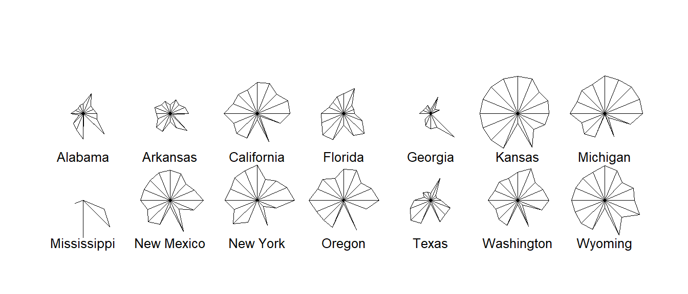
Figure 7.1: Stars plot for republican voting data.
Applying the hclust command, R code for producing a dendrogram to
display hierarchical clustering is given below.
repub <- read_csv("../data/repub.csv") |>
column_to_rownames("State")
repub.dist <- repub |> dist(method = "euclidean")
repub.clust.single <- repub.dist |> hclust(method = "single")
repub.clust.complete <- repub.dist |> hclust(method="complete")
library(ggdendro)
ggdendrogram(repub.clust.single)
ggdendrogram(repub.clust.complete)Note that we use column_to_rownames() here to move the State column
to the rownames. This is so that when we apply dist() to produce the
distance matrix, the rows and columns are labelled. These labels are
then kept through the hclust() functions. The ggdendrogram() function
from the ggdendro package gives us ggplot2 consistent plotting.
The dendrograms produced are displayed in Figures 7.2 and
7.3. Note
that the dissimilarity between two groups can be read off from the
height at which they join. So, for example, with single linkage (in
Figure 7.2 the group \(\{ \textsf{Alabama}, \textsf{Georgia} \}\) and
the group \(\{ \textsf{Arkansas}, \textsf{Florida},
\textsf{Texas} \}\) join at a dissimilarity of about 38. (In fact, the exact
figure is \(37.79937\) which can be obtained by inspecting
repub.clust.single$height).
#> Warning: package 'ggdendro' was built under R version 4.5.2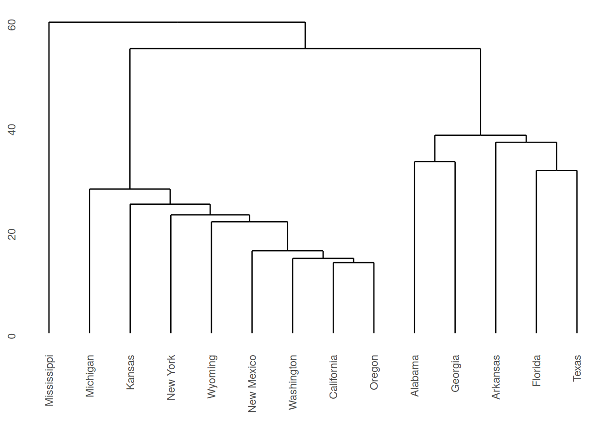
Figure 7.2: Dendrogram for Republican voting data, obtained using single linkage.
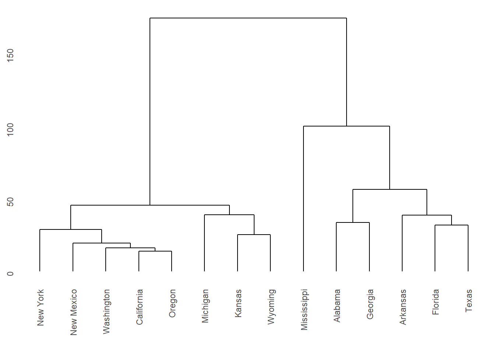
Figure 7.3: Dendrogram for Republican voting data, obtained using complete linkage.
Note that a dendrogram does not define a unique set of clusters. If the user wants a particular set of clusters, then these can be obtained by ‘cutting’ the dendrogram at a particular height, and defining the clusters according to the groups which formed below that height. For instance, if we use a cut-off height of 75 with complete linkage then three clusters emerge:
Cluster 1: New York, New Mexico, Washington, California, Oregon, Michigan, Kansas, Wyoming.
Cluster 2: Mississippi.
Cluster 3: Alabama, Georgia, Arkansas, Florida, Texas.
These groupings were obtained by inspection of the dendrogram. Such a
process would clearly have been laborious had all 50 states been present
in the data. Fortunately the R command cutree generates group
membership automatically.
#> Alabama Arkansas California Florida Georgia Kansas
#> 1 1 2 1 1 2
#> Michigan Mississippi New Mexico New York Oregon Texas
#> 2 3 2 2 2 1
#> Washington Wyoming
#> 2 2Single and Complete Linkage Compared
Single linkage is prone to ‘chaining’. In the figure below the three groups on the right will merge together (in a kind of chain) before combining with the group on the left. Note that everything would change if a single datum were added midway between the two groups on the left – these groups would then combine earlier than those on the right. This can be viewed as an unwanted lack of robustness with single linkage.
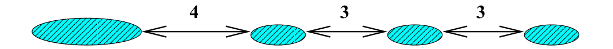
The central cluster in Figure 7.2 in Example 7.2 shows an instance of chaining with real data.
The growth of large clusters at small heights is very unlikely under complete linkage. In the figure below the middle cluster will combine with the right hand cluster because the extreme left hand edge of the large left cluster is distant. Nonetheless, one’s intuitive feel is that the middle cluster should first combine with left hand cluster.
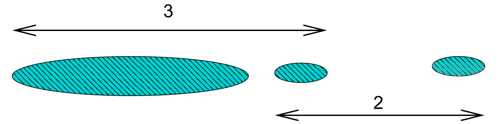
7.3 K-means clustering
If we have some knowledge apriori of the number of clusters \(K\), then the problem of clustering changes to assigning each datum to a cluster such that within-cluster variation is minimized (and between-cluster variation maximised).
A naive way to address this problem is to compute the within-cluster variation for all possible assignments the \(n\) data points to \(K\) clusters. We then pick the assignment with minimal variation. The problem is that the number of possible assignments is given by: \[S(n,K) = \frac{1}{K!}\sum_{k=1}^K (-1)^{K-k}\dbinom{K}{k}k^n.\] The leading term here is \(\frac{K^n}{K!}\) which gets large very quickly as \(n\) increases! We thus settle for an approximate solution via the iterative \(K\)-means algorithm.
For a set of \(n\) numerical datapoints \(x_i\), the average total variation in the data may be measured using \[T=\frac{1}{2N}\sum_{i=1}^n\sum_{j=1}^n d(x_i,x_j)\] where \(d\) is the dissimilarity metric. If we denote \(C(i)\) as the cluster that point \(x_i\) is assigned to, we may re-write this as \[\begin{aligned} T &= \frac{1}{2N}\sum_{k=1}^K\sum_{C(i)=k}\left(\sum_{C(j)=k}d(x_i,x_j) + \sum_{C(j)\neq k}d(x_i,x_j)\right)\\ &= W(C) + B(C).\end{aligned}\] where \(W(C)\) is the within-cluster variation \[W(C) = \frac{1}{2N}\sum_{k=1}^K\sum_{C(i)=k}\sum_{C(j)=k}d(x_i,x_j),\] and \(B(C)\) is the between-cluster variation \[B(C) = \frac{1}{2N}\sum_{k=1}^K\sum_{C(i)=k}\sum_{C(j)\neq k}d(x_i,x_j).\] Noting that \(T\) is a constant, minimizing \(W(C)\) is equivalent to maximising \(B(C)\).
If \(d(x_i,x_j)\) is the Euclidean distance, then these simplify to \[\begin{aligned} W(C) &= \sum_{k=1}^K \sum_{C(i)=k} (x_i - \mu_k)^2,\\ B(C) &= \sum_{k=1}^K N_k (\mu_k - \mu)^2,\\\end{aligned}\] where \(N_k\) is the number of data points in cluster \(k\), \(\mu_k\) is the mean of the data points in cluster \(k\), and \(\mu\) is the mean of all datapoints (grand mean).
This gives us the basis of the \(K\)-means algorithm:
Start by placing the cluster means \(\mu_k\) arbitrarily.
Compute the cluster assignment by assigning each datapoint \(x_i\) to the closest cluster mean: \[C(i) = \mathop{\mathrm{arg\,min}}_{1 \leq k \leq K} (x_i - \mu_k)^2.\]
Recompute the cluster means \(\mu_k\).
Repeat from 1 until \(\mu_k\) reach convergence.
Note the similarity with linear discriminant analysis: Rather than have a training data set define the cluster means and then assigning observations to the closest cluster, we use an iterative procedure where data from the previous iteration may be considered the training data.
There are a number of pros and cons to this method.
The algorithm is simple to implement, requiring only means and distances to be calculated.
The algorithm will always converge, but may only converge to a local minima rather than the global minimum63.
It is restricted to numerical data.
As means are used (Euclidean distance), outliers may be problematic.
Requires apriori knowledge of the number of clusters \(K\).
Example 7.3 \(K\)-means example on synthetic data
Given randomly generated data from 3 distributions in two-dimensions in Figure 7.4.
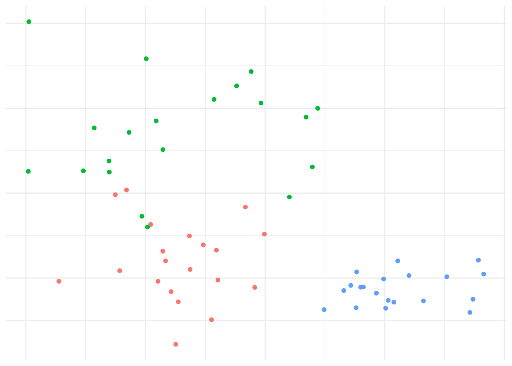
Figure 7.4: Data generated from 3 distributions for Example 7.3.
We’d expect that \(K=3\) is reasonable, so let’s explore how the \(K\)-means algorithm operates: Figure 7.5 shows the initial (random) cluster means, and several further iterations of the algorithm. We seed the algorithm by sampling 3 points randomly from the data. Notice how with even relatively poor choices for the initial cluster means, the algorithm still correctly identifies the clusters in this case, and converges quite quickly: There’s very little difference in the cluster means after the 8th iteration. The similarity with linear discriminant analysis is seen here as well, in that you can imagine lines bisecting the midpoints of the pair-wise cluster means dividing the region into partitions that contain each cluster.
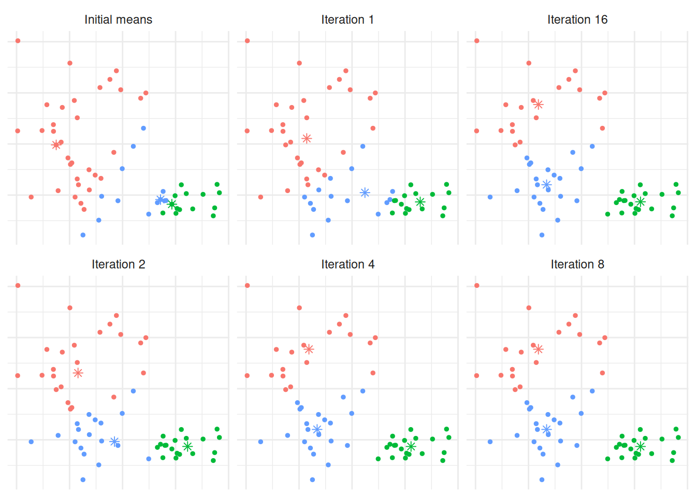
Figure 7.5: The \(K\)-means algorithm in practice after several iterations for Example 7.3.
In order to find an appropriate value for \(K\), one method is to apply the \(K\)-means algorithm for a number of different values for \(K\), and compare the within cluster variance produced under each value. It’s clear that the within-cluster variance will decrease monotonically, so rather than looking for the smallest value we instead look to see which value of \(K\) results in the largest decrease compared to \(K-1\) - typically we’re looking for the ‘kink’ in the graph of the within cluster variance versus \(K\). Figure 7.6 shows this for the above example. The majority of the reduction in cluster variance occurs by \(K=3\), and while things continue to improve, the relative improvement is minor.
#> Warning: package 'broom' was built under R version 4.5.2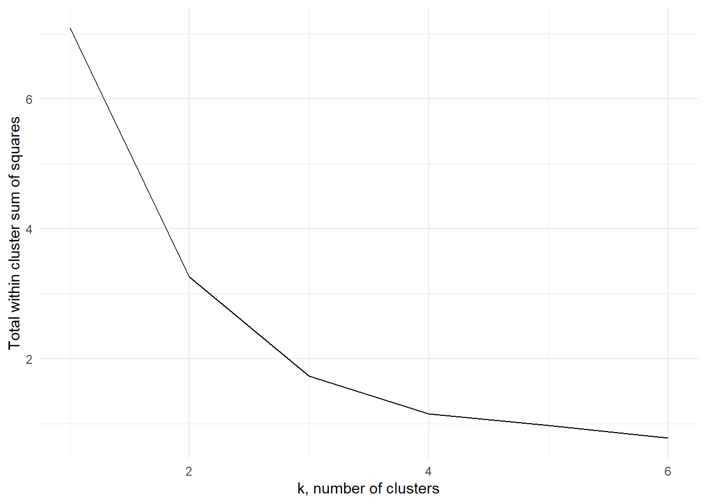
Figure 7.6: The within cluster variance for one to six clusters for Example 7.3
The \(K\)-means algorithm is implemented using the kmeans function in R
which has syntax
where x is the data, centers the number of clusters, and nstart
may be optionally specifed to run the algorithm several times from
different starting points, helping to minimise the chance of us being
left with a local minima rather than the global minimum. The output
class contains components
clusters: the cluster assignment for each observation.centers: the center of each cluster.withinss: the within cluster variation (sum of squares).size: the size of each cluster.
The information can be extracted into tidy data frames using tidy(),
augment() and glance() from the broom package in a similar way
as we can extract information for linear models.
Example 7.4 \(K\)-means of Penguins from the Palmer Archipelago
These data consiste of measurements of size, clutch observations and blood isotope ratios for adult foraging Adélie, Chinstrap, and Gentoo penguins observed on islands in the Palmer Archipelago near Palmer Station, Antartica. Data were collected and made available by Dr Kristen Gorman and the Palmer Station Long Term Ecological Research (LTER) Program.
We’ll use the measurements flipper_length_mm, bill_length_mm and body_mass_g
in order to cluster the penguins, under the assumption that we don’t know what the
underlying species is, and see whether the \(K\)-means algorithm allows us to
distinguish the species.
#> Warning: package 'palmerpenguins' was built under R version 4.5.2#> Warning: package 'patchwork' was built under R version 4.5.2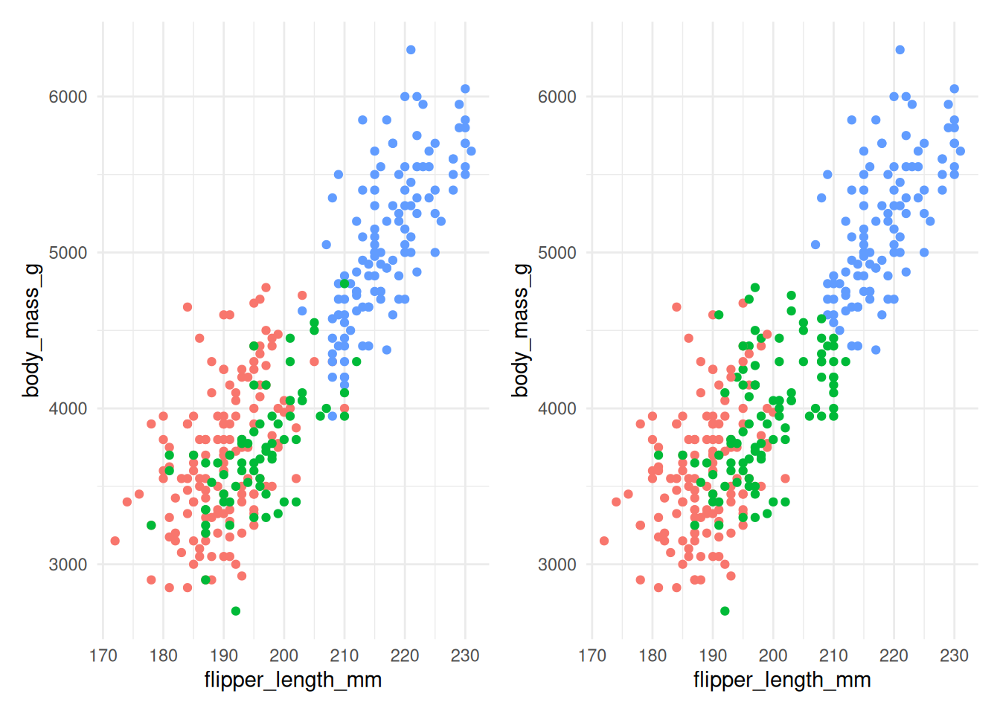
Figure 7.7: The actual species (left) and clusters found using \(K\)-means with 3 clusters (right) for Example 7.4.
Figure 7.7 compares the actual species (on the left) with the clusters found by the \(K\)-means algorithm on the right. We can see that the \(K\)-means algorithm does reasonably well, though there is some incorrect allocation fo moderate flipper lengths and body masses. The code used is below:
ggplot(penguins) +
geom_point(mapping=aes(x=flipper_length_mm,
y=body_mass_g,
col=species))
km <- penguins |>
select(flipper_length_mm, bill_length_mm, body_mass_g) |>
mutate(across(everything(), scale)) |>
kmeans(centers=3, nstart=20)
km |> augment(penguins) |>
ggplot() +
geom_point(mapping=aes(x=flipper_length_mm,
y=body_mass_g,
col=.cluster))Notice that we’re specifying nstart=20 when using kmeans. This
requests that the \(K\)-means algorithm is run using 20 separate starting
cluster positions, helping to minimise the chance of us being left with
a local minima rather than the global minimum. We’re also scaling each
predictor (via the mutate function) to a common scale to ensure that
all the variables were on the same scale. If we don’t do that, we’d end
up with body_mass_g dominating, as shown in Figure 7.8
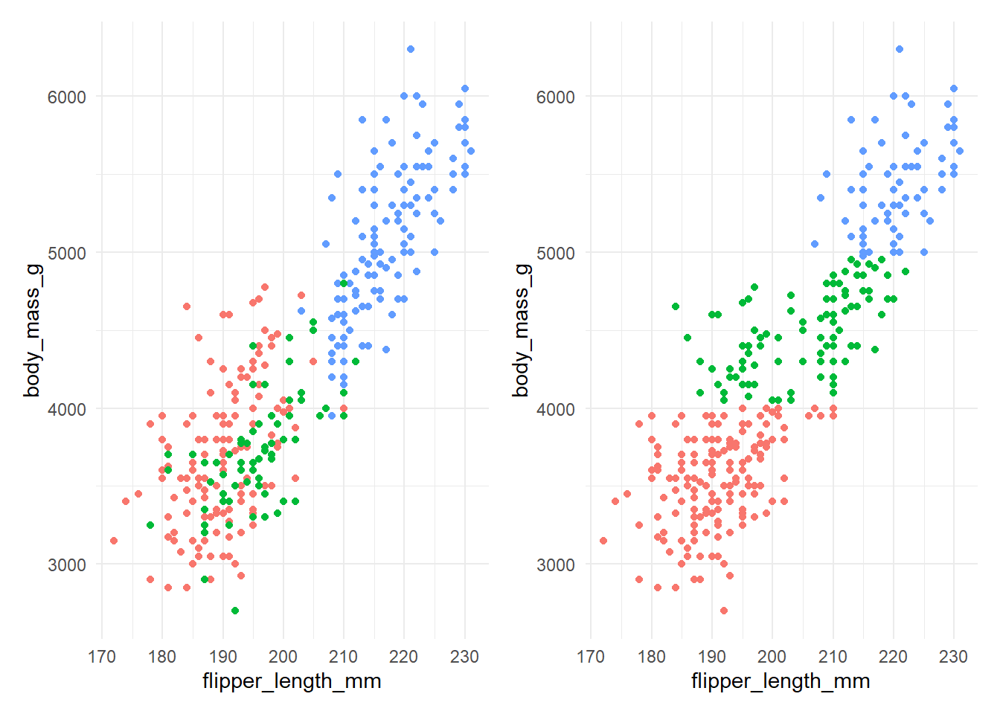
Figure 7.8: The actual species (left) and clusters found using \(K\)-means with 3 clusters (right) for Example 7.4 without scaling.
Figure 7.8 shows that without scaling, the division into clusters happens
almost exclusively along the body_mass_g axis, as this contributes the most to the
distance between observations. This clearly gives a clustering that does not align
well at all to the actual species.
Figure 7.9 compares the total within cluster sum of squares for a range of \(k\) for scaled (left) and unscaled (right) data. We see in either case that the data suggest that two clusters may be best, though the scaled data does show a very slightly larger kink at 3 clusters.
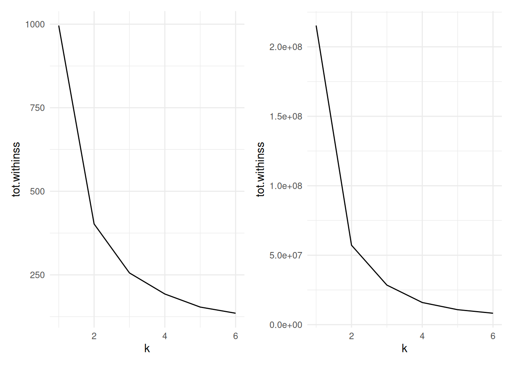
Figure 7.9: Cluster size versus within cluster variation for Example 7.4. Scaled data left, unscaled data right
The code to produce the datasets for these charts is below:
peng.scale <- penguins |>
select(flipper_length_mm, bill_length_mm, body_mass_g) |>
mutate(across(everything(), scale))
peng_ss <- tibble(k=1:6) |>
mutate(
km = map(k, ~ kmeans(peng.scale, centers=., nstart=20)),
tidied = map(km, glance)
) |>
unnest(tidied)
peng_ssWe scale the penguin data before applying
kmeans.To run
kmeansacross a range of k, we utilise thepurrrpackage’smapfunction for applying a function across the list of k. This takes in a list (or vector) and operates a function on each entry in turn, returning a list.The
tibble(k=1:6)sets up adata.framewith a single columnkranging from one to six.The
mutate()command first usesmap()to run the functionkmeans()for eachkon the scaled penguin data. Note that the varying parameter (k) in themap()is being passed in using the.argument - i.e. it is being mapped to thecentersargument. The result of this will be a list columnkm, where each entry is an R object (in this case one of classkmeans).The second line in
mutate()then operates on thekmlist column, running theglance()command frombroomwhich will return a tidydata.framecontaining summary model fit information such as the sum of squares. this is then stored in the list columntidied.Finally, we use
unnest()fromtidyrto expand thedata.frames stored in the list columntidied, flattening them out so that each of the columns withintidiedbecomes a column in the main data frame.In the end, we have columns for
k, a list columnkm(storing thekmeansoutput), then the columns that result from theglance()function (totssthe total sum of squares;tot.withinss, the total within-cluster sum of squares;betweenss, the between-cluster sum of squares; anditer, the number of iterations to convergence). As this is a tidy data.frame, it can be fed intoggplot()for plotting.
Example 7.5 \(K\)-means for image compression
One use of \(K\)-means (or any clustering method) is in image compression. Given an image, a simple way to compress the image is to replace each pixel (which is normally represented using 4 bytes) with an index into a smaller colour palette. If we can replace all the pixels in the image with just 16 colours for example, each pixel would then take up just 0.5 bytes, a compression ratio of 1:8. Replacing arbitrary colours by a small set is exactly the problem that clustering is attempting to solve. It works best on images that have few colour gradients, rather than on images with lots of subtle colour differences. Figure 7.10 shows the same image clustered using a range of colours.
Figure 7.10: The same image clustered using top, from left: 2, 4, 8 colours and bottom from left: 16, 32, 256 colours.
7.4 K-medoids clustering
So far we have used only the Euclidean distance as our dissimilarity measure. The Euclidean distance is not appropriate, however, if we have categorical data, or the data are on very different scales. Instead, the \(K\)-mediods algorithm may be used which uses only the distances between data points, allowing any dissimilarity matrix to be used. The algorithm is as follows:
Pick initial data points to be cluster centers \(m_k\).
Compute the cluster assignment by assigning each datapoint \(x_i\) to the closest cluster center. \[C(i) = \mathop{\mathrm{arg\,min}}_{1 \leq k \leq K} d(x_i, m_k).\]
Find the observation in each cluster that minimises the total distance to other points in that cluster. \[i_k = \mathop{\mathrm{arg\,min}}_{C(i)=k} \sum_{C(j)=k} d(x_i, x_j).\]
Assign \(m_k = x_{i_k}\).
Repeat from 1 until the \(m_k\) reach convergence.
This is significantly more costly than \(K\)-means as we have lost the
simplification of using the means of each cluster as the center. The
pam function (Partitioning Around Medoids) in the cluster package
may be used to compute the \(K\)-medoids of a dataset. Like hclust, it
can take a dissimilarity object directly, thus overcoming the
restriction of utilising only the Euclidean distance function. The
syntax is
where x is either a data frame or a dissimilarity matrix, k is the
number of clusters. metric specifies the dissimilarity measure to use
in the case x is a data frame.
Example 7.6 \(K\)-medoids to Republican voting data
We show how to use the pam function on the US republican voting data
from example 7.2.
#> Warning: package 'cluster' was built under R version 4.5.2#> Medoids:
#> ID 1916 1920 1924 1928 1932 1936 1940 1944 1948 1952
#> Arkansas 2 28.01 38.73 29.28 39.33 12.91 17.86 20.87 29.84 21.02 43.76
#> California 3 46.26 66.24 57.21 64.70 37.40 31.70 41.35 42.99 47.14 56.39
#> Mississippi 8 4.91 14.03 7.60 17.90 3.55 2.74 4.19 6.44 2.62 39.56
#> 1956 1960 1964 1968 1972 1976
#> Arkansas 45.82 43.06 43.9 30.8 68.9 34.97
#> California 55.40 50.10 40.9 47.8 55.0 50.89
#> Mississippi 24.46 24.67 87.1 13.5 78.2 49.21
#> Clustering vector:
#> Alabama Arkansas California Florida Georgia Kansas
#> 1 1 2 1 1 2
#> Michigan Mississippi New Mexico New York Oregon Texas
#> 2 3 2 2 2 1
#> Washington Wyoming
#> 2 2
#> Objective function:
#> build swap
#> 82.00643 74.48071
#>
#> Available components:
#> [1] "medoids" "id.med" "clustering" "objective" "isolation"
#> [6] "clusinfo" "silinfo" "diss" "call" "data"As with kmeans, we can clean up this output using tidy() to extract the medoids,
glance() to extract the model fit information, and augment() to add the
clustering information to the original data.
Here we’ve used the Manhattan distance as opposed to the Euclidean
distance, yet we’ve retreived the same grouping as we did in example
7.2, with Mississippi being in a cluster on it’s own, and the other
states grouping into two clusters. We could also do this using some
other distance measures, by passing the dissimilarity object into pam
instead of the data frame.
#> Medoids:
#> ID
#> [1,] "2" "Arkansas"
#> [2,] "3" "California"
#> [3,] "8" "Mississippi"
#> Clustering vector:
#> Alabama Arkansas California Florida Georgia Kansas
#> 1 1 2 1 1 2
#> Michigan Mississippi New Mexico New York Oregon Texas
#> 2 3 2 2 2 1
#> Washington Wyoming
#> 2 2
#> Objective function:
#> build swap
#> 82.00643 74.48071
#>
#> Available components:
#> [1] "medoids" "id.med" "clustering" "objective" "isolation"
#> [6] "clusinfo" "silinfo" "diss" "call"7.5 Silhouette plots
We’ve already mentioned one heuristic that can be used to determine the
most appropriate number of clusters for the data. Another technique is
to use a silhouette plot which is produced using the cluster package.
Given a clustering, the silhouette \(s(i)\) of an observation \(x_i\) is a measure of how well \(x_i\) fits into the cluster to which it has been assigned, compared with the other clusters. It is computed using \[s(i) = \frac{b(i) - a(i)}{\max\{a(i),b(i)\} },\] where \(a(i)\) is the average dissimilarity between \(x_i\) and the rest of the points in the cluster to which \(x_i\) belongs, and \(b(i)\) is the smallest average dissimilarity between \(x_i\) and the points in the other clusters64. Figure 7.11 shows this diagramatically.
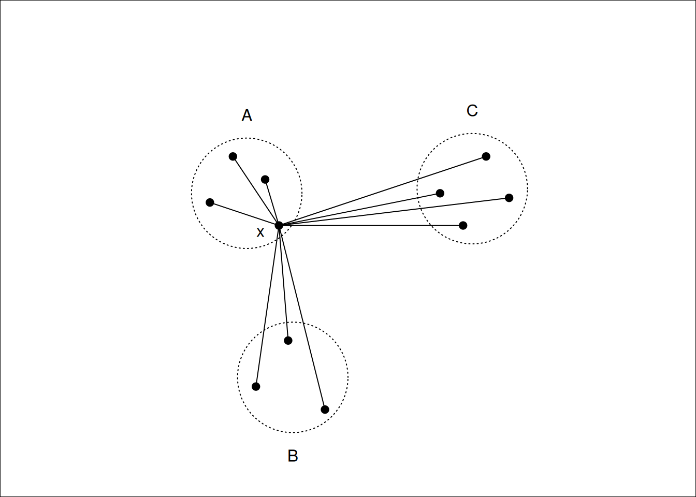
Figure 7.11: \(x\) lies in cluster \(A\), so \(a(i)\) will be the average of the dissimilarities to other points in \(A\). \(b(i)\) will be the average dissimilarity to points in cluster \(B\) as this is smaller than the average dissimilarity to cluster \(C\).
Notice that \(s(i)\) can be at most \(1\) when \(a(i)\) is small compared to \(b(i)\), suggesting that \(x_i\) has been assigned to the correct cluster, as all other clusters are much further away. \(s(i)\) can be as low as -1, however, when \(b(i)\) is small compared to \(a(i)\), which occurs if \(x_i\) would be better suited in a different cluster. An \(s(i)\) value of \(0\) indicates that \(x_i\) is equally close to two or more clusters.
A silhouette plot is a plot of the silhouettes of each observation, grouped by cluster, and sorted by decreasing silhouette. These plots give a visual indication of how the well clustered the data are: High silhouette values indicate well grouped clusters, with low silhouette values indicating clusters that are close to each other (which may suggest that they should be grouped together).
The average silhouette across all data may be used as a measure of how well clustered the data are. As the number of clusters increases, we would expect clustering to improve until a point is reached where a cluster is split into two or more clusters that remain close to one another (and thus not well grouped). Finding the number of clusters for which the average silhouette is maximised is often a reasonable heuristic for determining the appropriate number of clusters in a dataset.
A silhouette plot may be generated by using plot on a silhouette
class, which can be generated from the output to pam, or by a
dissimilarity matrix and a cluster vector. For the Republican voting
data we have the following.
library(cluster)
repub.dist <- dist(repub, method="manhattan")
repub.pam.1 <- pam(repub.dist, k=3)
repub.pam.2 <- pam(repub.dist, k=4)
plot(silhouette(repub.pam.1), border=NA, do.clus.stat=FALSE, do.n.k=FALSE,
main="3 clusters")
plot(silhouette(repub.pam.2), border=NA, do.clus.stat=FALSE, do.n.k=FALSE,
main="4 clusters")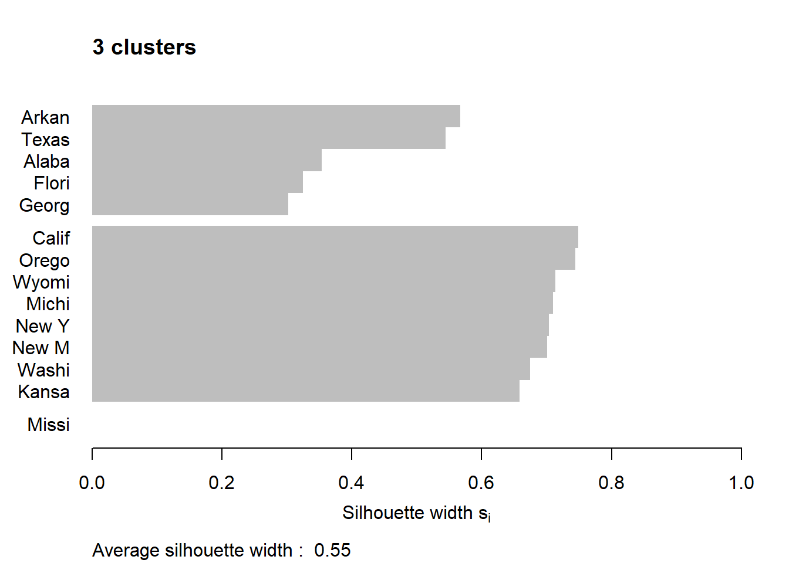
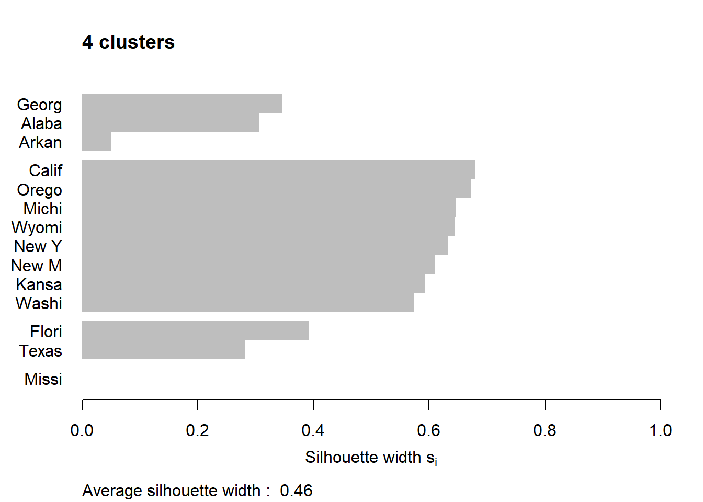
Figure 7.12: Silhouette plots of the republican voting data
Figure 7.12 shows the resulting plots. Points to note:
We have used
border=NAto make sure the barplot that is produced has no border. This is important as the default plotting mode on Windows has no anti-aliasing enabled, which means transparent borders don’t correctly let the colour from the bars through so you end up with no bars. Setting the border toNAfixes this as it turns the border off.We have used
do.clus.stat=FALSEanddo.n.k=FALSEto turn off some of the statistics that might otherwise crowd the plot. Experiment with these yourself.The Mississippi silhouette is defined to be 1, as it is the only point in its cluster (and thus the average dissimilarity to other points in the cluster is not well-defined). To highlight this special-case, the silhouette bar has not been plotted.
There is a higher average silhouette for 3 clusters rather than 4, and some evidence in the 4 cluster silhouette plot that at least one of the clusters is not well grouped, with Arkansas having a low silhouette. Further information about this may be found by printing the silhouette output from the
pamobject:#> cluster neighbor sil_width #> Georgia 1 3 0.34562691 #> Alabama 1 3 0.30613459 #> Arkansas 1 3 0.04979458 #> California 2 3 0.68012986 #> Oregon 2 3 0.67300077 #> Michigan 2 3 0.64554014 #> Wyoming 2 3 0.64475783 #> New York 2 3 0.63315168 #> New Mexico 2 3 0.60961094 #> Kansas 2 3 0.59358889 #> Washington 2 3 0.57341819 #> Florida 3 1 0.39220717 #> Texas 3 1 0.28198501 #> Mississippi 4 1 0.00000000We can see that Arkansas lies between cluster 1 and cluster 3, perhaps suggesting that these two clusters may be artificially split.
If you wish to extract the silhouette information and plot yourself using ggplot2,
you can do so via the pluck function above:
repub.pam.2 |> pluck('silinfo', 'widths') |>
as.data.frame() |>
rownames_to_column("State") |>
ggplot() +
geom_col(mapping = aes(y=as_factor(State), x=sil_width)) +
labs(x="Silhouette width", y=NULL)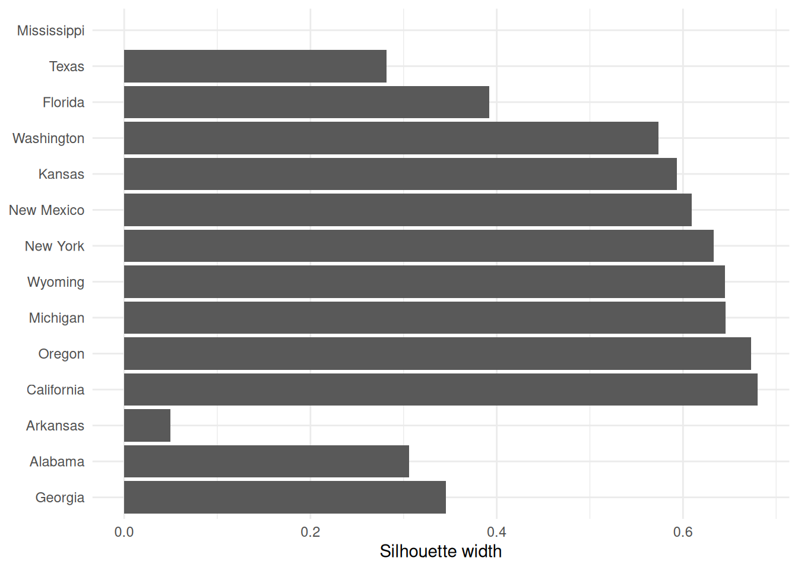
This can be useful for larger datasets, where you might like to just do a boxplot of the silhoutte widths for each cluster.
If you wish to generate a plot of silhouettes for output from kmeans or
hclust you can use the second form of the silhouette command
where x is a vector with the cluster numbers of each observation, such
as clusters returned from kmeans or the output of cutree, and
dist is a dissimilarity matrix, normally computed using dist. Note
that you need not use the same dissimilarity measure as was used to
generate the clustering. (e.g. the squared Euclidean measure used in
kmeans). For the penguins data this may be done as follows.
set.seed(27)
peng.scaled <- penguins |>
select(flipper_length_mm, bill_length_mm, bill_depth_mm, body_mass_g) |>
mutate(across(everything(), scale))
peng.km.1 <- peng.scaled |> kmeans(centers=3, nstart=20)
peng.km.2 <- peng.scaled |> kmeans(centers=4, nstart=20)
peng.dist <- peng.scaled |> dist(method='euclidean')
peng.sil.1 <- peng.km.1 |> pluck('cluster') |> silhouette(dist=peng.dist)
peng.sil.2 <- peng.km.2 |> pluck('cluster') |> silhouette(dist=peng.dist)
peng.sil <- bind_rows(
peng.sil.1 |> as.data.frame() |> mutate(k='k=3'),
peng.sil.2 |> as.data.frame() |> mutate(k='k=4')
) |>
mutate(cluster = as.factor(cluster))
ggplot(peng.sil) +
geom_boxplot(mapping = aes(x=cluster, y=sil_width)) +
facet_wrap(vars(k), scales='free_x')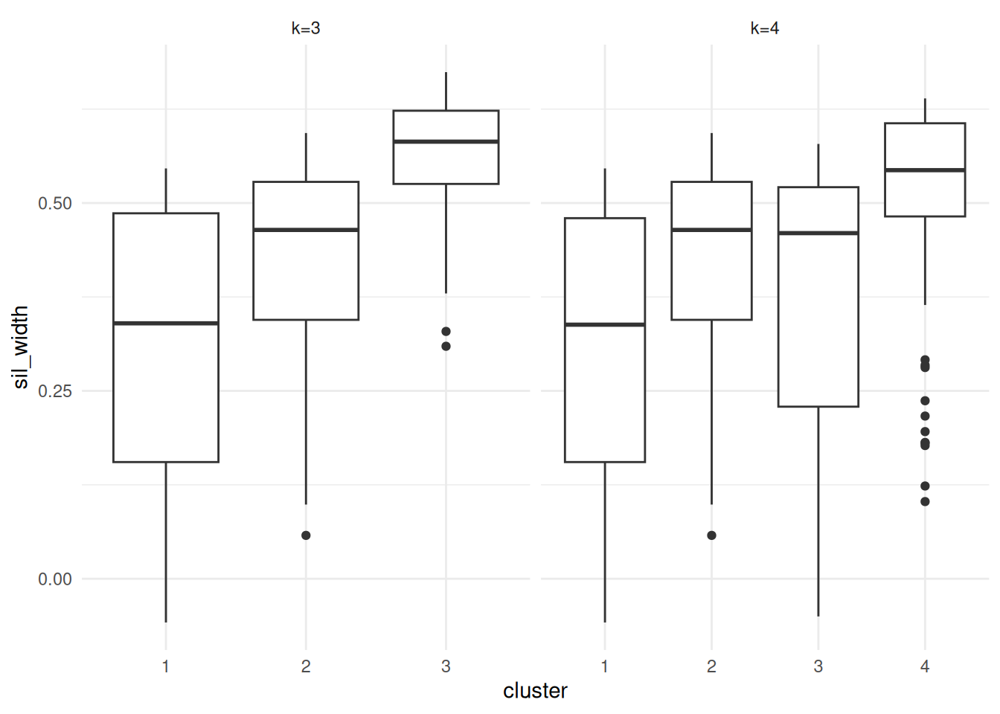
Figure 7.13: Silhouette plots of the Palmer Penguins data set
Plots are given in Figure 7.13. Points to note:
We’ve scaled the penguins data prior to fitting k-means or computing distances.
The
silhouette()command utilises theclustervector from thepeng.km.1object, so we’ve usedpluck()to pull it out.The
silhouette()function returns a matrix with classsilhouette. We coerce this into adata.framefor plotting.We bind the two datasets together so we can plot them side by side with facetting.
We’ve used boxplots here rather than a standard silhouette plot, just by way of demonstration.
It is clear that the third cluster in the 3-cluster case has been split in two (clusters 3 and 4) in the 4-cluster case, each of which has lower average silhouette, suggesting this split is artificial.
Notice in both plots there are points with negative silhouettes. This suggests that these penguins may be better suited in one of the other clusters. Whilst the \(k\)-means algorithm has assigned these observations to the closest cluster based on the cluster centroid, that doesn’t necessarily mean that it is closest to all the points in that cluster. The different ways of measuring how close a point is to each cluster (e.g. cluster centroid versus average dissimilarity to other points in the cluster) may give different results, in the same way that single and complete linkage give different results in heirarchical clustering.
7.6 Bootstrap stability and the adjusted Rand index
The output of a clustering algorithm is only one partition of the data. It is natural to ask whether that partition is stable: if the data were perturbed slightly, would essentially the same clusters be found again? One common approach is to use bootstrap resampling.
Suppose that a baseline clustering gives a partition \(C = \{C_1, \ldots, C_K\}\), and a bootstrap resample gives another partition \(D = \{D_1, \ldots, D_L\}\). Let \[n_{ij} = |C_i \cap D_j|, \qquad a_i = \sum_{j=1}^L n_{ij}, \qquad b_j = \sum_{i=1}^K n_{ij},\] and let \(n = \sum_{i=1}^K \sum_{j=1}^L n_{ij}\) be the number of observations common to the two partitions. The adjusted Rand index is \[\mathop{\mathrm{ARI}}(C,D) = \frac{\sum_{i=1}^K \sum_{j=1}^L \dbinom{n_{ij}}{2} - \frac{1}{\dbinom{n}{2}} \left(\sum_{i=1}^K \dbinom{a_i}{2}\right) \left(\sum_{j=1}^L \dbinom{b_j}{2}\right)} {\frac{1}{2} \left[\sum_{i=1}^K \dbinom{a_i}{2} + \sum_{j=1}^L \dbinom{b_j}{2}\right] - \frac{1}{\dbinom{n}{2}} \left(\sum_{i=1}^K \dbinom{a_i}{2}\right) \left(\sum_{j=1}^L \dbinom{b_j}{2}\right)}.\]
This index compares all pairs of observations and asks whether they are placed together, or kept apart, in both clusterings. The adjustment removes the agreement that would be expected purely by chance. An ARI of 1 indicates perfect agreement, an ARI near 0 indicates agreement no better than random assignment, and a negative ARI indicates worse than random agreement.
A simple bootstrap stability study proceeds as follows.
Fit the clustering to the original data to obtain a baseline partition.
Resample the observations with replacement.
Refit the clustering method to the resampled data.
Compare the new clustering with the baseline clustering using ARI.
Repeat steps 2–4 many times.
If the resulting ARI values are consistently high, then the clustering is relatively stable under sampling variation. If they are often small or highly variable, then the clustering should be treated with caution.
7.7 Density-based clustering
Hierarchical clustering, \(K\)-means and PAM all attempt to partition the observations into groups, but they are not designed specifically for clusters with irregular shape or for data sets containing genuine noise points. Density-based methods address this by looking for regions where the observations are concentrated.
For a point \(x_i\), define its \(\varepsilon\)-neighbourhood by
\[N_\varepsilon(x_i) = \{x_j : d(x_i, x_j) \leq \varepsilon\}.\]
Given a minimum neighbourhood size MinPts, we classify points as
follows.
\(x_i\) is a core point if \(|N_\varepsilon(x_i)| \geq \text{MinPts}\).
\(x_i\) is a border point if it is not core, but lies in the \(\varepsilon\)-neighbourhood of a core point.
\(x_i\) is a noise point if it is neither core nor border.
To formalise the DBSCAN algorithm, suppose \(x_j \in N_\varepsilon(x_i)\). Then:
\(x_j\) is directly density reachable from \(x_i\) if \(x_i\) is a core point.
\(x_j\) is density reachable from \(x_i\) if there exists a sequence of points \(x_i = z_0, z_1, \ldots, z_m = x_j\) such that each \(z_{r+1}\) is directly density reachable from \(z_r\).
Two points are density connected if they are both density reachable from the same point.
A DBSCAN cluster is then a maximal set of density connected points. A point that is not assigned to any such set is labelled as noise.
The DBSCAN algorithm is:
Pick an unvisited point \(x_i\).
Compute \(N_\varepsilon(x_i)\).
If \(x_i\) is not core, temporarily label it as noise and move on.
If \(x_i\) is core, start a new cluster and recursively add all points density reachable from \(x_i\).
Repeat until every point has been visited.
Unlike \(K\)-means or PAM, DBSCAN does not require the number of clusters to be fixed in advance. It can also identify non-convex cluster shapes, and it may leave some observations unclustered.
7.8 Choosing \(\varepsilon\) using a \(k\)-distance plot
DBSCAN requires the user to choose both \(\varepsilon\) and MinPts. One
practical heuristic is the \(k\)-distance plot. If MinPts = m, then a
point becomes core once it has at least \(m-1\) other points inside its
\(\varepsilon\)-neighbourhood (the point itself is counted in MinPts).
Hence we compute, for each observation, the distance to its \((m-1)\)st
nearest other point. If we denote this by \(d_{m-1}(x_i)\), then we
sort the values
\[d_{m-1}(x_{(1)}) \leq d_{m-1}(x_{(2)}) \leq \cdots \leq d_{m-1}(x_{(n)}).\]
For points deep inside dense clusters these distances are small. For border and noise points they increase much more quickly. A visible “kink” or elbow in the ordered plot therefore provides a rough guide to a sensible choice of \(\varepsilon\).
Example 7.7 DBSCAN on a non-convex synthetic data set
DBSCAN is particularly useful when the clusters are curved or ring-like, since methods such as \(K\)-means would tend to split such shapes into artificial convex pieces. A typical workflow is:
dbscan::kNNdistplot(as.matrix(select(nonconvex, x, y)), k = 4)
abline(h = 0.92, col = "firebrick", lty = 2)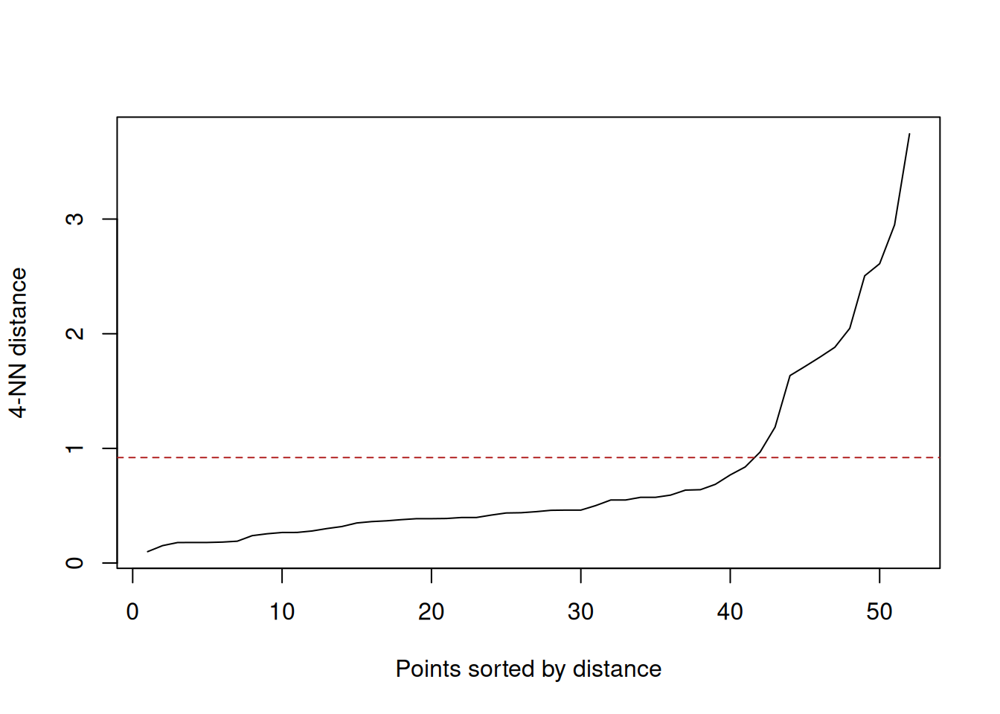
(#fig:dbscan_nonconvex_knn)Ordered 4-nearest-neighbour distances for the synthetic crescent-ring data. The elbow suggests an \(\varepsilon\) value a little below 1.
db <- dbscan(select(nonconvex, x, y), eps = 0.92, minPts = 5)
bind_cols(
nonconvex,
cluster = factor(if_else(db$cluster == 0L, "noise", paste0("cluster ", db$cluster)))
) |>
ggplot(aes(x = x, y = y, colour = cluster)) +
geom_point(alpha = 0.8) +
coord_equal() +
labs(x = "x", y = "y", title = "DBSCAN clusters on non-convex synthetic data")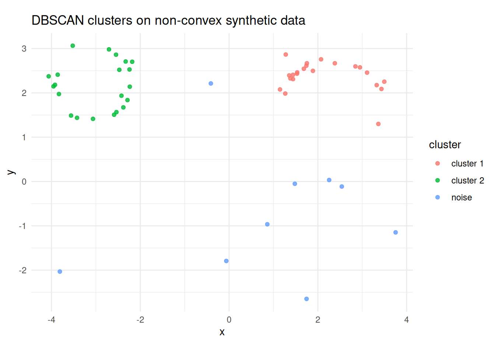
(#fig:dbscan_nonconvex_clusters)DBSCAN on the synthetic crescent-ring data using \(\varepsilon = 0.92\) and MinPts = 5. Dense curved regions are recovered as clusters, while isolated points are labelled as noise.
The kNNdistplot() call is used to choose a plausible value of
\(\varepsilon\). Here the elbow occurs around \(\varepsilon \approx 0.9\),
and the fitted DBSCAN model then labels the crescent and ring as dense
groups while leaving isolated observations as noise.
Example 7.8 A multivariate clustering workflow for penguins
Although the Palmer Penguins data are not truly high-dimensional, they
still provide a useful illustration of the workflow. We can cluster
using the four numeric measurements bill_length_mm, bill_depth_mm,
flipper_length_mm, and body_mass_g, while retaining species and
island only for interpretation after fitting. A simple workflow is:
penguins |>
select(species, island, bill_length_mm, bill_depth_mm,
flipper_length_mm, body_mass_g) |>
drop_na() |>
mutate(across(bill_length_mm:body_mass_g, ~ as.numeric(scale(.x))))The key point is that the clustering is fit only on the numeric variables that define similarity; the categorical labels are retained for interpretation, not for training the clustering itself.
7.9 HDBSCAN and UMAP
7.9.1 HDBSCAN
DBSCAN uses a single value of \(\varepsilon\), so it can struggle when a dataset contains both sparse and dense clusters. HDBSCAN (Hierarchical DBSCAN, Campello et al. 2013) addresses this limitation by building a hierarchy over a range of density thresholds rather than committing to a single \(\varepsilon\).
The key idea is the mutual reachability distance between two points
\(x_i\) and \(x_j\):
\[\begin{equation}
d_{\text{mreach}}(x_i, x_j) = \max\!\bigl( d_{\text{core}}(x_i),\,
d_{\text{core}}(x_j),\, d(x_i, x_j) \bigr),
\tag{7.1}
\end{equation}\]
where \(d_{\text{core}}(x_i)\) is the core distance of \(x_i\): the
distance to its \(k\)-th nearest neighbour (for a fixed \(k\),
minPts in the implementation). The mutual reachability distance equals
the ordinary distance between the points unless one or both is in a
sparse region, in which case it is inflated to their core distances.
This has the effect of smoothing out noise without distorting dense
clusters.
HDBSCAN constructs a minimum spanning tree of the mutual reachability distances, converts it to a dendrogram (condensed cluster tree), and then extracts clusters as the subtrees that are most stable across the range of density thresholds. Stability is measured by how long a cluster persists as \(\varepsilon\) decreases; clusters that appear briefly are absorbed into their parent. This self-tuning avoids the need to choose \(\varepsilon\) manually, making HDBSCAN particularly useful when cluster densities vary across the dataset.
Example 7.9 HDBSCAN on the penguins data
library(dbscan)
penguins_density <- palmerpenguins::penguins |>
select(species, island, bill_length_mm, bill_depth_mm,
flipper_length_mm, body_mass_g) |>
drop_na()
penguins_scaled <- penguins_density |>
mutate(across(bill_length_mm:body_mass_g, ~ as.numeric(scale(.x))))
penguins_matrix <- penguins_scaled |>
select(bill_length_mm:body_mass_g) |>
as.matrix()
hdb <- hdbscan(
penguins_matrix,
minPts = 8
)
tibble(
cluster = factor(if_else(hdb$cluster == 0L, "noise", paste0("cluster ", hdb$cluster))),
species = penguins_density$species
) |>
count(cluster, species) |>
pivot_wider(names_from = species, values_from = n, values_fill = 0)#> # A tibble: 3 × 4
#> cluster Gentoo Adelie Chinstrap
#> <fct> <int> <int> <int>
#> 1 cluster 1 122 0 0
#> 2 cluster 2 0 151 67
#> 3 noise 1 0 1A PCA display of the fitted labels is shown below. The clustering is still fit in the full scaled four-variable space; PCA is only used here to give a simple 2D view of the result.
penguin_pca <- prcomp(penguins_matrix)
penguin_hdbscan_pca <- as_tibble(
penguin_pca$x[, 1:2],
.name_repair = ~ c("PC1", "PC2")
) |>
bind_cols(
cluster = factor(if_else(hdb$cluster == 0L, "noise", paste0("cluster ", hdb$cluster))),
species = penguins_density$species
)
ggplot(penguin_hdbscan_pca, aes(x = PC1, y = PC2, colour = cluster, shape = species)) +
geom_point(alpha = 0.7) +
labs(title = "HDBSCAN clusters on Palmer Penguins")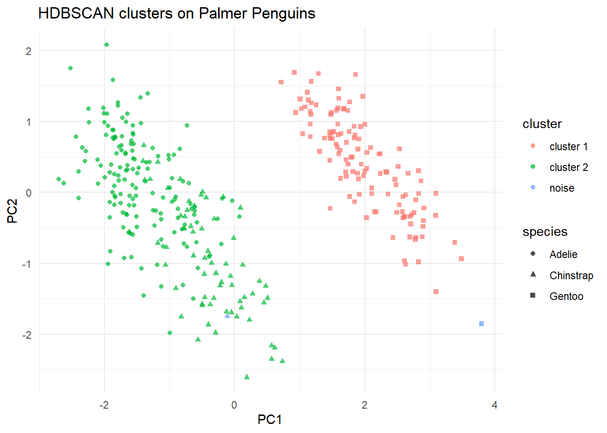
(#fig:hdbscanpeng_pca)PCA display of the scaled penguin measurements, coloured by HDBSCAN cluster and shaped by species.
Points to note:
Only the
minPtsparameter need be chosen. We useminPts = 8here to look for reasonably stable density groups in the scaled penguin measurements.HDBSCAN identifies one cluster that is almost entirely Gentoo, and a second cluster that combines most Adélie and Chinstrap penguins. This is a useful reminder that a density-based method may discover a different grouping structure from \(K\)-means.
Observations with cluster label 0 are noise points that did not belong to any stable cluster.
Before turning to UMAP, it helps to separate clustering from visualisation. PCA is the simplest linear display map for scaled numeric data, while UMAP is a nonlinear display map that emphasises local neighbourhood structure. In either case, the clustering itself should be fit in the original feature space; the lower-dimensional map is there to help us interpret the result.
7.9.2 UMAP
UMAP (Uniform Manifold Approximation and Projection, McInnes et al. 2018) is a dimensionality reduction technique used to produce low-dimensional displays of high-dimensional data. It is not a clustering method, but is widely used to visualise the structure found by clustering algorithms and to inspect how well different clusters separate in a 2D or 3D projection.
Neighbourhood graph construction. UMAP begins by building a weighted
graph of the \(k\) nearest neighbours of each point \(x_i\) in the
original feature space, where \(k\) is controlled by the n_neighbors
parameter. The edge weight \(w_{ij}\) between neighbouring points \(x_i\)
and \(x_j\) is a fuzzy set membership strength that reflects how close
\(x_j\) is to \(x_i\) relative to the local neighbourhood scale around
\(x_i\):
\[w_{ij} = \exp\!\left(\frac{-(d(x_i, x_j) - \rho_i)}{\sigma_i}\right),\]
where \(\rho_i\) is the distance from \(x_i\) to its nearest neighbour
(so that the weight of the closest neighbour is always 1), and
\(\sigma_i\) is a per-point bandwidth calibrated so that the effective
number of neighbours (the fuzzy set cardinality) matches \(k\). The
final symmetric weights are \(\bar{w}_{ij} = w_{ij} + w_{ji} -
w_{ij}w_{ji}\).
Low-dimensional optimisation. UMAP then seeks coordinates
\(y_1, \ldots, y_n \in \mathbb{R}^d\) (usually \(d = 2\)) such that the
low-dimensional pairwise affinities
\[\begin{equation}
v_{ij} = \left(1 + a\,\lVert y_i - y_j \rVert^{2b}\right)^{-1}
\tag{7.2}
\end{equation}\]
match the high-dimensional weights \(\bar{w}_{ij}\) as closely as
possible. The parameters \(a\) and \(b\) are determined from the
min_dist hyperparameter, which controls how tightly UMAP packs
nearby points in the embedding. The coordinates are chosen to minimise
the cross-entropy between the two fuzzy sets:
\[\begin{equation}
\mathcal{L} = \sum_{i \neq j}
\left[
\bar{w}_{ij}\log\frac{\bar{w}_{ij}}{v_{ij}}
+ (1 - \bar{w}_{ij})\log\frac{1 - \bar{w}_{ij}}{1 - v_{ij}}
\right].
\tag{7.3}
\end{equation}\]
This ensures that pairs that are neighbours in the original space
(large \(\bar{w}_{ij}\)) are placed close together in the embedding
(large \(v_{ij}\)), while non-neighbouring pairs are pushed apart.
Key hyperparameters:
n_neighbors(\(k\)): controls the local neighbourhood size. Smaller values emphasise fine-grained local structure; larger values produce a more global view.min_dist: controls how tightly points are packed in the embedding. Smaller values produce clumped clusters; larger values spread points out for a more continuous layout.n_components: the dimensionality of the embedding (typically 2 for visualisation).
Interpreting a UMAP plot. The UMAP 1 and UMAP 2 axes are
computed display coordinates. Unlike principal components, they have no
linear interpretation in terms of the original variables. Distances
between widely separated clusters in a UMAP plot should not be
interpreted as meaningful: UMAP preserves local structure well but
global structure (the distances between clusters) is not reliable.
Within a cluster, relative distances are approximately meaningful.
As a direct consequence: clustering should be fit in the original feature space unless dimension reduction is itself part of the model. UMAP is used to display clustering results, not to determine them.
Example 7.10 UMAP visualisation of a clustering solution
#> Warning: package 'uwot' was built under R version 4.5.2#> Warning: package 'Matrix' was built under R version 4.5.2set.seed(161324)
umap_coords <- umap(
penguins_matrix,
n_neighbors = 15,
min_dist = 0.1,
n_components = 2,
n_threads = 1
)
penguin_umap <- as_tibble(umap_coords, .name_repair = ~ c("UMAP1", "UMAP2")) |>
bind_cols(
cluster = factor(if_else(hdb$cluster == 0L, "noise", paste0("cluster ", hdb$cluster))),
species = penguins_density$species
)
ggplot(penguin_umap, aes(x = UMAP1, y = UMAP2, colour = cluster,
shape = species)) +
geom_point(alpha = 0.7) +
labs(title = "UMAP view of Palmer Penguins -- HDBSCAN clusters")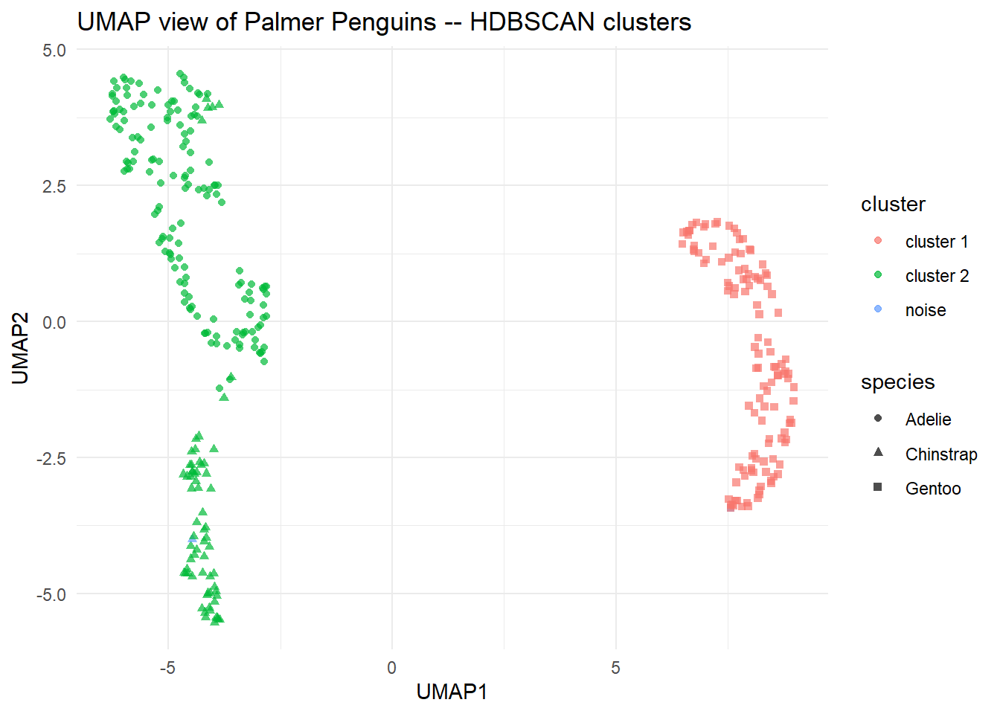
Figure 7.14: UMAP display of the scaled penguin measurements, coloured by HDBSCAN cluster and shaped by species.
Points to note:
umap()from theuwotpackage is the recommended R implementation. Settingn_threads = 1makes the result reproducible when combined with a fixed seed.The UMAP is fit using the same scaled numeric matrix as HDBSCAN, so the display is consistent with what the algorithm actually saw.
Setting
shape = speciesuses the known species labels as an independent check on the clustering. This is a useful validity check because the species information was not used during fitting.
7.9.3 Practical method comparison
The table below summarises the practical trade-offs between the clustering methods covered in this chapter.
| Method | Key idea | Handles non-convex? | Scales to \(n\)? | Needs \(K\)? | Handles noise? |
|---|---|---|---|---|---|
| Hierarchical | Merge/split by dissimilarity | Depends on linkage | Poor (\(O(n^2)\)) | No (cut tree) | No |
| K-means | Minimise within-SS | No (convex only) | Good | Yes | No |
| K-medoids (PAM) | Minimise to actual centre | No (convex only) | Moderate | Yes | Partial |
| DBSCAN | Density connected regions | Yes | Good | No | Yes |
| HDBSCAN | Hierarchical density extraction | Yes | Good | No | Yes |
A few practical guidelines:
Use hierarchical clustering when the data are small enough to inspect the full dendrogram, or when the number of clusters is genuinely unknown and you want an overview at multiple scales.
Use K-means or K-medoids when the clusters are roughly spherical and the number of clusters can be chosen via the silhouette width or elbow plot. K-medoids is more robust to outliers because the cluster centre is a real observation.
Use DBSCAN when the clusters are non-convex or irregularly shaped, and when identifying noise points is important. Choose \(\varepsilon\) via a \(k\)-distance plot.
Use HDBSCAN as the default when cluster densities vary across the dataset, or when you do not want to commit to a single \(\varepsilon\). It is the most general-purpose density method.
Use UMAP for visualisation after fitting any of the above methods, particularly when the data are high-dimensional. Always fit the clustering in the original feature space.
7.10 Summary
Clustering is the main unsupervised grouping tool in these notes.
The choice of dissimilarity measure matters as much as the choice of clustering algorithm.
Methods such as \(K\)-means and PAM work best for compact, centre-based clusters, while DBSCAN and HDBSCAN are better suited to irregular shapes and noisy data.
Preprocessing is especially important in clustering because the algorithm sees only the features we give it; scaling, missing-value handling, and outlier review therefore directly affect the clusters.
Looking ahead, Section 8.6 studies another unsupervised task, association rule mining, which focuses on co-occurrence patterns rather than grouping observations.
In fields such as computer science and image analysis, cluster analysis is referred to as unsupervised learning and discriminant analysis is referred to as supervised learning.↩︎
One potential way to avoid local minima is to start with a number of different initial cluster mean positions and pick the result that gives smallest within-cluster variation.↩︎
If a cluster contains only one point, the average dissimilarity to other points in the cluster is not well defined. We use the natural definition that \(a(i)\equiv 0\) which gives \(s(i)=1\) in this case.↩︎